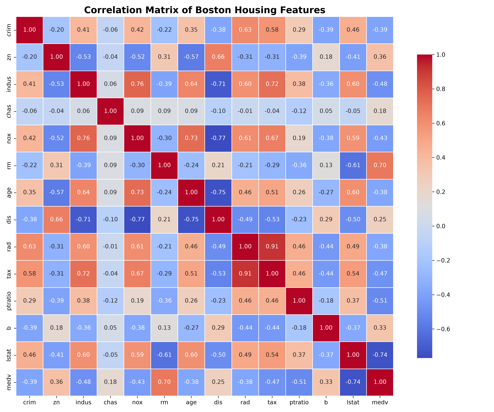
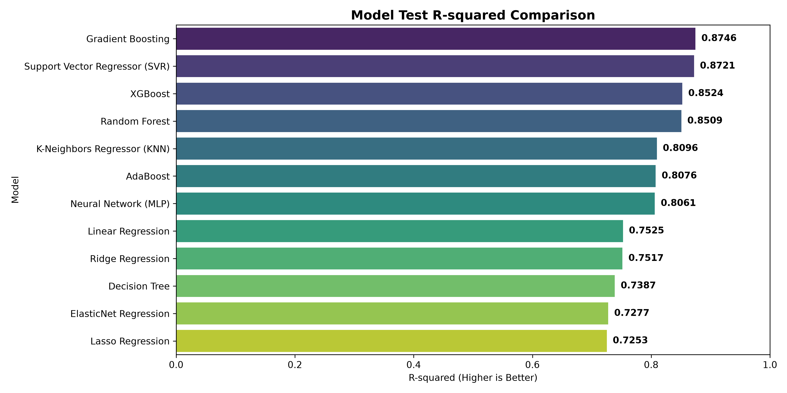
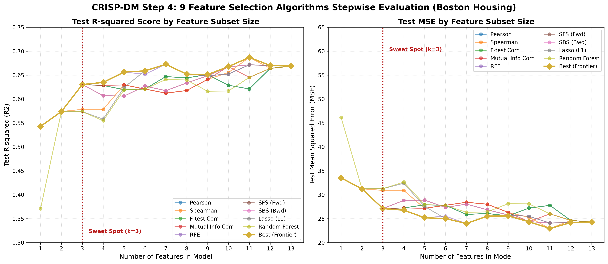
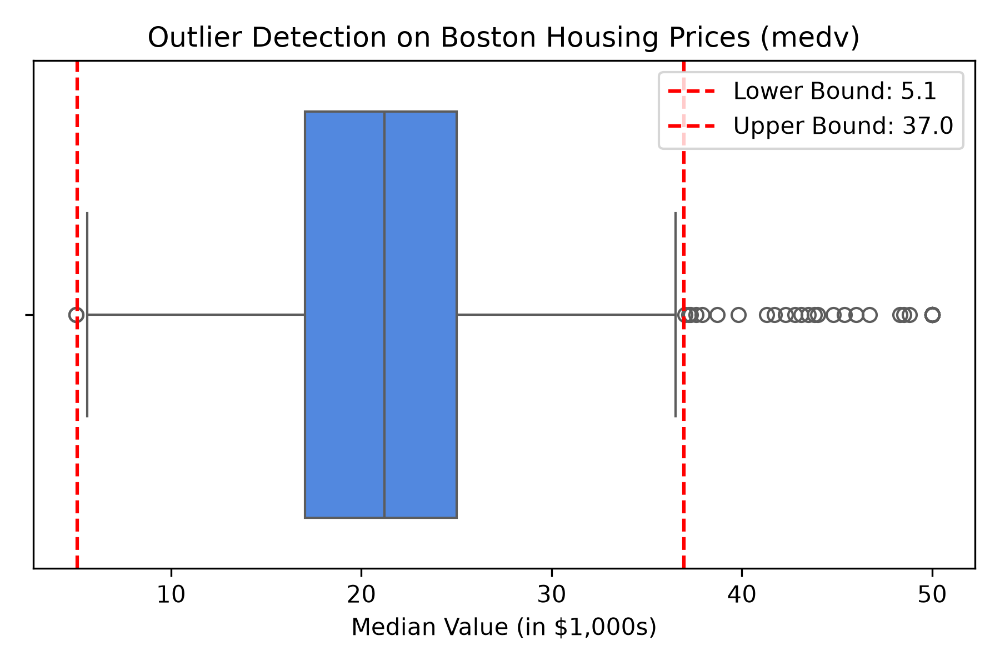
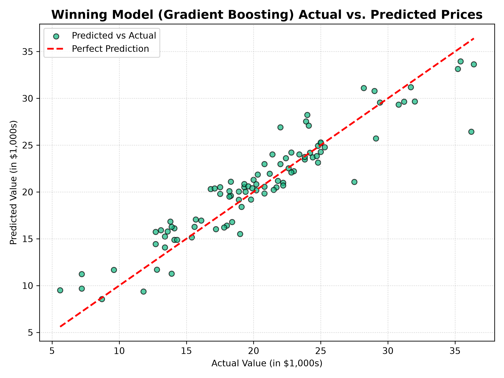

核心商業問題
如何根據住宅區的基礎建設、交通便利度、環境污染程度及房屋本身結構特徵，精準預測該地區的房價中位數（MEDV）？
專案目標 (Project Goal)
本專案建立一個端到端（End-to-End）機器學習預估流程，清洗數據並去除離群值，對比 12 種迴歸模型演算法，找出泛化能力最佳的模型以部署實時價格推估系統。
基於 CRISP-DM 流程之資料探勘與 12 種機器學習迴歸模型對比分析儀表板
如何根據住宅區的基礎建設、交通便利度、環境污染程度及房屋本身結構特徵，精準預測該地區的房價中位數（MEDV）？
本專案建立一個端到端（End-to-End）機器學習預估流程，清洗數據並去除離群值，對比 12 種迴歸模型演算法，找出泛化能力最佳的模型以部署實時價格推估系統。
波士頓房價資料集共包含 506 筆資料，13 個輸入特徵與 1 個目標變數。經數據分析，房間數 (RM) 與低收入人口比例 (LSTAT) 是最具影響力的關鍵欄位。
| 欄位名稱 | 物理意義 | 影響力預期 |
|---|---|---|
| crim | 城鎮人均犯罪率 | 負相關 (降低房價) |
| zn | 大住宅用地比例 (超過 25,000 sq.ft.) | 正相關 (高級住宅區) |
| indus | 非零售商業用地比例 | 負相關 |
| chas | 是否臨 Charles 河 (1: 臨河; 0: 否) | 正相關 (景觀房) |
| nox | 一氧化氮濃度 | 負相關 (空氣污染) |
| rm | 每戶平均房間數 | 極高正相關 (核心指標) |
| age | 1940年前建造的自住房屋比例 | 負相關 (折舊) |
| dis | 到五個就業中心的加權距離 | 正相關 |
| rad | 輻射狀公路的可達性指數 | 負相關 |
| tax | 每 10,000 美元的滿額財產稅率 | 負相關 |
| ptratio | 城鎮師生比例 (教育資源) | 負相關 (學區指標) |
| b | 城鎮黑人比例指標 | 弱正相關 |
| lstat | 社會低收入階層人口比例 | 極高負相關 (核心指標) |
計算目標房價 `medv` 的 IQR 後，移除 40 筆在邊界（5.06萬美元至 36.96萬美元）之外的極端值，消除高價上限天花板造成的雜訊干擾，清洗後數據為 466 筆。
因為各特徵變數尺度差距大（如 tax 最大 711，而 nox 僅約 0.5），使用 `StandardScaler` 將輸入特徵轉換為平均數 0、標準差 1 的常態化特徵，確保距離與正規化模型穩定收斂。
以隨機 80% 訓練集 (372 筆) 與 20% 測試集 (94 筆) 做切分，落實防範過擬合之評估。
本專案對比 12 種經典迴歸演算法，使用 5-Fold 交叉驗證計算擬合分數：
| 模型名稱 | CV R² (平均) | 測試集 R² | 測試集 MAE | 測試集 RMSE |
|---|---|---|---|---|
| Gradient Boosting | 0.8036 | 0.8746 | 1.6929 | 2.2431 |
| SVR (Support Vector) | 0.8128 | 0.8721 | 1.5746 | 2.2651 |
| XGBoost | 0.7944 | 0.8524 | 1.8002 | 2.4330 |
| Random Forest | 0.8131 | 0.8509 | 1.8654 | 2.4460 |
| Linear Regression | 0.7219 | 0.7525 | 2.2310 | 3.1511 |
| Lasso Regression | 0.7067 | 0.7253 | 2.3789 | 3.3198 |
Gradient Boosting（測試集 R² = 0.8746）取得最佳預估能力。主因是房間數與低收入人口等欄位具有強烈的**非線性邊界**，傳統線性模型（R² ≈ 0.75）擬合度有其極限，而樹集成模型能自適應分裂空間來精準適應複雜曲面。
藉由 9 種不同的特徵選擇演算法，我們在 1 到 13 個特徵維度上分別訓練模型並做效能對比，從中找到特徵數與解釋力最划算的黃金點：
黃金甜點區 (k = 3)：
當模型僅採用 lstat (低收入比)、rm (房間數)、ptratio (學區師生比) 三個核心指標時，模型解釋度 R² 即刻飆升至 0.63，隨後即便加滿至 13 個特徵，R² 也僅微幅上升至 0.67。這說明了用最划算的 3 個特徵，即可決定房價 63% 的變動程度。





身為一隻高貴的波士頓街貓，本喵去巡邏了 506 個紙箱領地，並幫這些人類口中的「豪宅」算了一下可以值多少頂級鮪魚罐罐（1000美元 = 1000罐罐）：
為了不被騙去廉價紙箱，本喵找了 10 隻貓咪參謀 來估價：
有些笨貓（線性迴歸）只會用最簡單的直線去量，結果猜得漏洞百出。最後是一隻叫「豹貓老大（Gradient Boosting）」的參謀最懂本喵的心！牠會精細地算出哪裡有老鼠洞，還會根據其他貓猜錯的罐罐數一直修正，最後猜出來的「罐罐預算表」跟真實價格簡直一模一樣！
想像一下，如果你是波士頓小鎮的「城堡估價師」，有人想賣掉他的城堡，你該怎麼猜這個城堡值多少錢呢？我們用電腦魔法找到了幾個超級大線索：
我們找了 10 個不同專長的小矮人 來猜價格。有的矮人只會畫直線，有的矮人只會走格子。最後，一個叫 「漸進矮人（Gradient Boosting）」 的人最聰明！他每次都看別人猜錯多少，然後幫忙補上去，所以他猜得最精準！
小寶貝你看，這裡有好多用積木蓋的屋屋喔！
我們請了 10 隻小猴子 來幫忙猜這間屋屋可以換幾顆糖果。最後，有一隻叫做「超級小綠猴（Gradient Boosting）」的猴子猜得最準！牠每次都會看別隻猴子少猜了幾顆，然後把糖果補上去，所以牠最厲害喔！